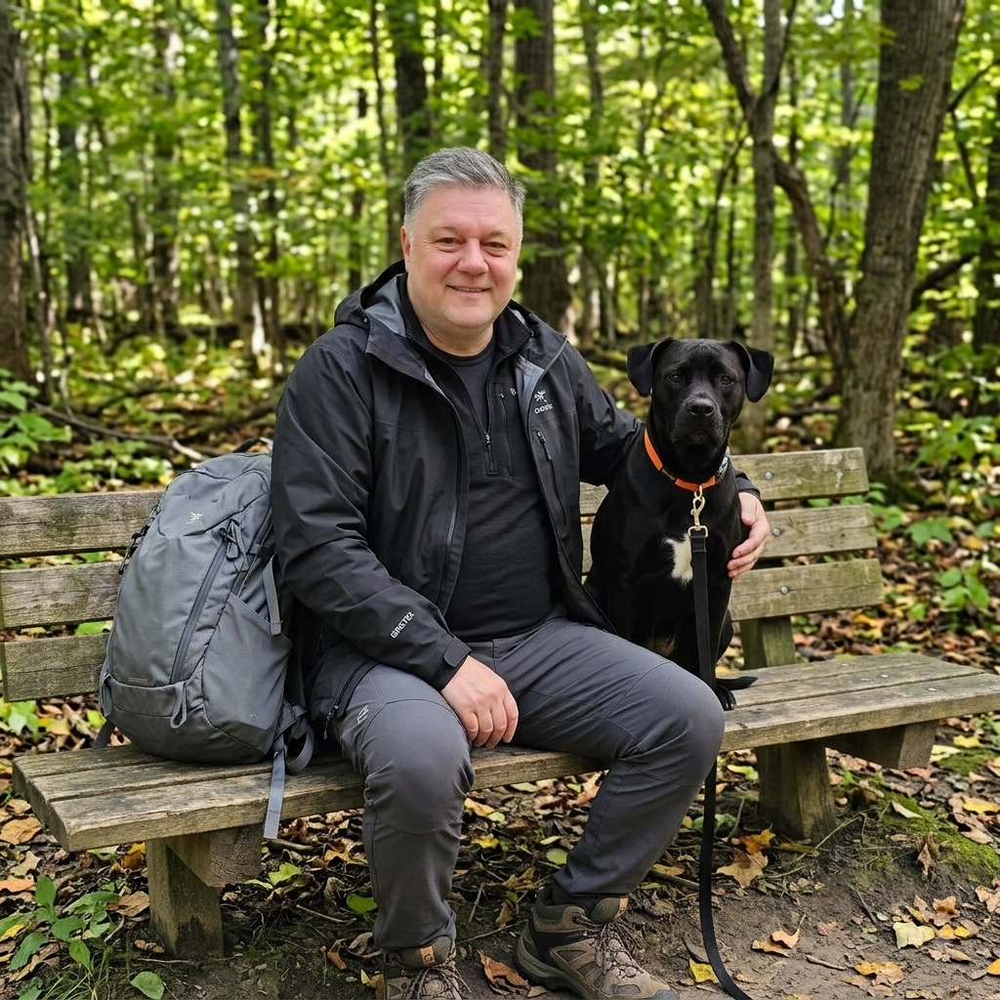

Infrastructure Awareness
A practical understanding of water, wastewater, servicing capacity, asset life, and the long-term consequences of infrastructure decisions.
About Mark
Mark Eyre is running for Deputy Mayor to bring clear questions, responsible planning, and respect for taxpayers to Strathroy-Caradoc Council.

Mark enjoys spending time outdoors and walking with his dog.
Mark Eyre is a retired Professional Engineer (P.Eng.), currently non-practising, with an Executive MBA from Bath Spa University, UK, and a Bachelor of Engineering Science in Chemical and Biochemical Engineering from Western University. He is bringing professional experience, independent judgment, and the time to serve the community to his candidacy for Deputy Mayor.
Mark’s career includes engineering, water and wastewater projects, infrastructure optimization, regulatory planning, business leadership, consulting, and financial services. He worked for Thames Water in the United Kingdom on the development of new water and wastewater projects. He later worked with Trojan Technologies in municipal water disinfection, wastewater and reuse, regulatory planning, and improving the performance and useful life of existing infrastructure.
His work has taken him across Canada, the United Kingdom, the European Union, and parts of Eastern Europe. This experience gave Mark a practical understanding of how technical, financial, regulatory, and long-term planning decisions affect communities, customers, and taxpayers.
Mark is a farm owner on Walkers Drive in Strathroy-Caradoc and has a direct connection to the municipality’s agricultural, rural, growth, and land-use issues. He has been actively involved in municipal planning and governance matters, including reviewing planning policy, official-plan and zoning processes, Council procedure, and public-participation rules.
Mark has appeared before Council as a resident delegate and has worked to ensure residents have a fair opportunity to be heard. He believes residents deserve clear information, respectful treatment, responsible growth, sound infrastructure planning, and careful stewardship of their tax dollars.
Mark has also contributed to community life as a coach with Strathroy-Caradoc Youth Hockey. While living in the United Kingdom, he volunteered as a mentor with The Prince’s Trust—now known as The King’s Trust—supporting young adults as they developed and launched new businesses.
Mark returned to Canada in 2008 and moved to Strathroy in 2009. His family already had longstanding ties to the community, with his parents having lived in the area for more than 15 years before Mark purchased his farm on Walkers Drive. He is running for Deputy Mayor to bring practical experience, accountability, and a steady, independent voice to Council.
Mark’s experience is directly relevant to the decisions that will shape Strathroy-Caradoc’s future.
A practical understanding of water, wastewater, servicing capacity, asset life, and the long-term consequences of infrastructure decisions.
Careful questions about project costs, procurement, growth, budgets, and the financial impact of decisions on residents.
A commitment to clear information, respectful public participation, and making sure residents have a fair opportunity to be heard.